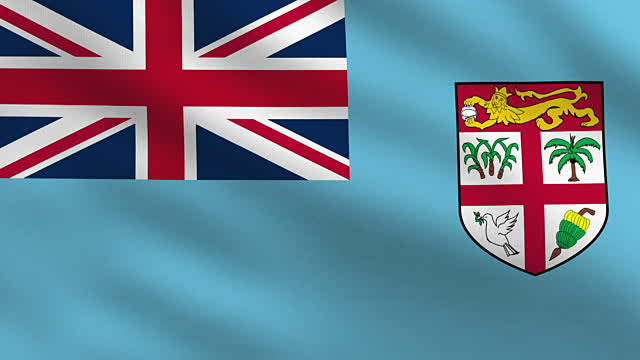

Fiji

What a better place for a beach getaway than the tropical and secluded Fiji? Home to some of the
bluest waters, friendliest people, and candy-colored coral reefs; you're sure to find something to love
here. Choose a resort or a local beach and see where the relaxation takes you.
Beaches to Explore
- Castaway Island
- Liku Beach
- Natadola Beach
- Seagrass Bay
3 Main Attractions
- Visit the Sri Siva Subramaniya Temple
- Puruse the Thurston Gardens
- Picnic in Albert Park
Need a Change of Pace?
Travel to an island right off the eastern coast of Fiji to explore the Yasawa Islands. Home of
adventure this archipelago of 20 volcanic islands hosts great backpacking, snorkeling, and
cave adventures.
Because You Liked This...
You may want to explore the natural beach town beauty of Positano in Italy!
You may be curious about a different altitude. Check out the gorgeous setting of snowcapped
mountains in Switzerland.